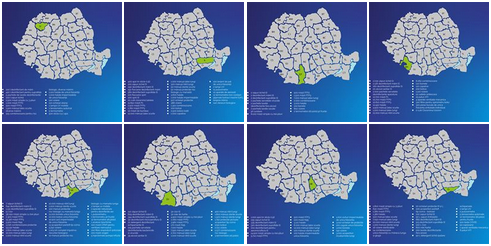

Vă mulțumim vouă, medicilor, asistentelor și personalului din linia I în lupta împotriva coronavirusului (COVID-19). Pe voi ne bazăm toți ceilalți. Sunteți eroii noștri!
Dragi medici, aveți nevoie de ceva? Spuneți-ne. Vrem și putem să vă ajutăm!
Misiunea noastra este să ajutăm spitalele, unitățile sanitare și medicii de familie din România în lupta contra coronavirusului (COVID-19).
Din fericire, există atât companii, cât și organizații care vor să ajute și care au o parte din banii, oamenii și resursele necesare. Am creat această platformă pentru a aduce împreună oamenii din sistemul medical, care sunt acum în prima linie a luptei împotriva COVID-19, organizațiile non-profit și oamenii de business din România care vor și pot să ofere un ajutor neprețuit în aceste momente.
Până acum am primit peste 900 de cereri de ajutor de la cadre medicale din toată țara, pe care voluntarii noștri le-au validat telefonic și sunt agregate aici.
Pe baza lor, zeci de companii și mai multe ONG-uri au livrat deja zeci de mii de mănuși, mii de litri de dezinfectant, săpun lichid, apă plată și multe alte produse de care spitalele au foarte multă nevoie în această perioadă.
Dacă vrei să ajuți, aici poți vedea cererile agregate ale spitalelor din țară.
Dacă vrei să preiei datele noastre, te rugăm să ne scrii la ajutorspitale@entreprenation.ro

Ești reprezentant al unei unități medicale?
Ai nevoie de orice formă de ajutor, de resurse materiale sau umane? Aici poți face apel la mediul de business pentru sprijin imediat!
Spune-ne ce nevoi aiPoți să oferi o mână de ajutor?
Alătură-te comunității antreprenoriale care face eforturi pentru a limita efectele crizei generate de COVID-19 în România!
Spune-ne cu ce poți contribuiVrei să donezi bani?
Asociația Zi de BINE lansează campania #scutpentruspitale
În această perioadă, medicii sunt în prima linie de atac. Au nevoie de resurse în lupta cu COVID-19: echipamente medicale, echipamente de protecție, dezinfectanți, teste diagnostic.
Cum te poți implica:
- Trimite “SUS” la 8862 pentru o donație de 4 euro
- Donații in lei: Asociația ZI DE BINE RO56RNCB0092166359160001, Sucursala Universitate
- Intră pe www.zidebine.ro și află în ce alte moduri te poți implica.
Partenerii noștri de la “Dăruieste viață” au anunțat că din 11 martie toate fondurile pe care le strâng vor fi direcționate exclusiv luptei cu coronavirusul. Se vor achiziționa și dona spitalelor din linia întâi (spitale de urgență și de boli infecțioase): echipamente de protecție, echipamente medicale și aparatură medicală.
Se poate dona astfel:
- Prin SMS la 8826 cu mesajul "IMPREUNA". Fiecare sms înseamnă 2 euro
- La linkul: www.daruiesteviata.ro/covid-19
- În contul bancar de la ING Bank:
RO08 INGB 0000 9999 0317 5286 (RON)
RO68 INGB 0000 9999 0471 5148 (EUR)
(Beneficiar: Asociatia Daruieste Viata)
Donează pentru Fondul de Urgență
Strângem fonduri pentru ca salvatorii să își îndeplinească misiunea în lupta cu COVID-19. Doar împreună putem gestiona efectele pandemiei.
Se poate dona astfel:
- La linkul: https://fonddeurgenta.arcromania.ro/donatii-online/
- În contul bancar de la Banca Transilvania:
RO23 BTRL RONC RT00 9865 5809 (RON)
(Beneficiar: Asociatia pentru Relatii Comunitare)
Fundația Educativă Godmother a preluat coordonarea efortului logistic și de achizitie consumabile medicale și non-medicale pentru Ajutorspitale.entreprenation.ro
Ne poți ajuta ajuta și tu donând orice sumă în contul de lei:
RO98BRDE426SV89537684260
BRD Agentia Tei
Beneficiar: Fundatia Educativa Godmother
Împreună suntem mai puternici în lupta împotriva COVID-19!
Proiectul #ajutorspitale se adresează atât spitalelor și centrelor medicale care au nevoie de susținere pentru a-și putea desfășura activitatea în contextul dificil cu care se confruntă, cât și mediului de business, companiilor și antreprenorilor care au resurse materiale și/ sau umane valoroase, prin care pot susține sistemul medical în această perioadă.
Proiectul este o punte de legătură între resursele din mediul de business și nevoile pe care spitalele românești le au în acest moment critic. Inițiat de Dorin Boerescu (CEO 2Performant) și Raluca Negrea (Fondator Makesense), cu susținerea Ilincăi Păun (CEO The Entrepreneurship Academy), a lui Alexandru Ghiță (Fondator Educativa) acest proiect este acum implementat de o echipă de peste 80 de voluntari (profesori, psihologi, bancheri, statisticieni, programatori, antreprenori, project manageri, PRisti, graficieni, creatori de conținut, accounți, BTLiști etc).


Ești reprezentant al unei unități medicale?
Ai nevoie de orice formă de ajutor, de resurse materiale sau umane? Aici poți face apel la mediul de business pentru sprijin imediat!
Spune-ne ce ai nevoiePoți să oferi o mână de ajutor?
Alătură-te comunității antreprenoriale care face eforturi pentru a limita efectele crizei generate de COVID-19 în România!
Spune-ne cu ce poți contribui